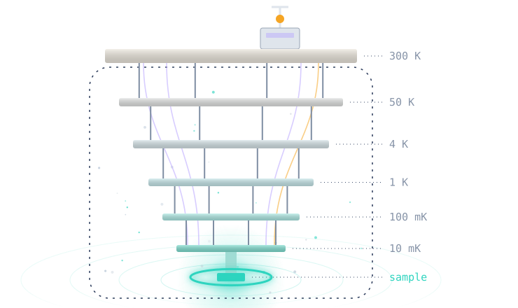
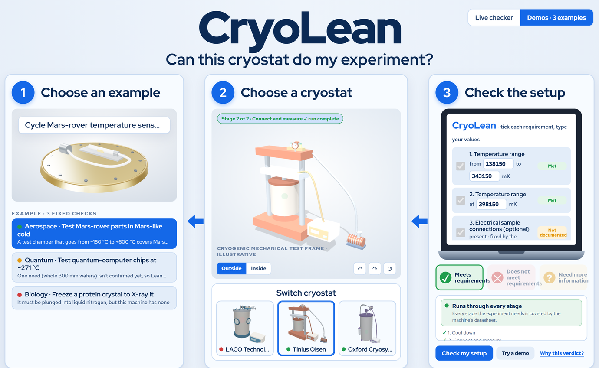

VibeCheck · The Usable Formal Methods
Hackathon · San Francisco · Nov 2026
One experiment. One machine.
One honest answer.

Hanah Rahman · Nicholas Brandenburg
hrahman12.github.io/CryoLean · github.com/hrahman12/CryoLean · generic cryostat drawn in code, no real model
/ What it does · three real checks
Aerospace
Mars-rover sensors
−135 to +70 °C cycles,
+125 °C bake
on a Tinius Olsen chamber
Requirements
met
Chamber documents
−150 to +600 °C.
Quantum
300 mm silicon wafers
at ≤ 1.6 K
on a Bluefors XLDHehp
Need more
information
Wafer size unconfirmed
(1 of 3 needs). Lean waits.
Biology
Protein crystal
flash-cooled in
liquid nitrogen
on a Lake Shore CCS-800
Does not meet
requirements
No cryogen documented.
A CryoMed TSCM48XV passes.
Verdicts as the website shows them: site/data.json; data/experiments/v4_aero_mars_prt_thermal_cycling.json. The quantum demo leaves wafer size unconfirmed on purpose; confirmed, it passes. Lean checks the plan against sourced specs, not the machine itself.
● Live · real Lean verdicts

hrahman12.github.io/CryoLean · every answer on the page is one of 138,564 precomputed Lean outcomes (13,200 featured pairs) · Demos tab shown